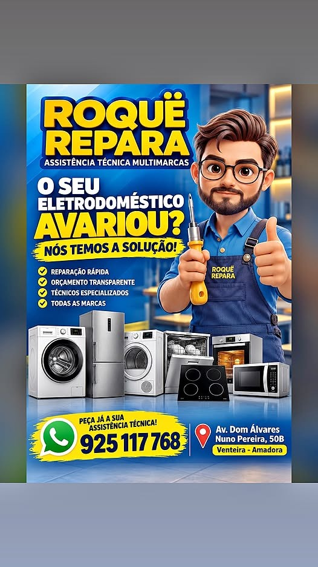

Máquinas de lavar roupa
Diagnóstico e reparação de avarias.
Reparação de eletrodomésticos e televisores com atendimento próximo, diagnóstico profissional e orçamento transparente.
📍 Venteira, Amadora · Atendimento na Grande Lisboa

Assistência técnica para os equipamentos essenciais do seu dia a dia.
Diagnóstico e reparação de avarias.
Problemas de lavagem, drenagem e funcionamento.
Falhas de refrigeração e funcionamento.
Assistência técnica e avaliação de avarias.
Diagnóstico e reparação eletrónica.
Reparação de problemas elétricos e de funcionamento.
Assistência a placas elétricas e de indução.
Diagnóstico de anomalias e reparação.
Sabemos como uma avaria pode complicar a rotina. Por isso, procuramos oferecer uma assistência próxima, com explicações claras e soluções adequadas a cada equipamento.
Fale connosco ↗Avaliamos a avaria e explicamos a intervenção proposta.
Informação sobre o serviço antes de avançar com a reparação.
Atendemos diferentes tipos de eletrodomésticos e eletrónicos.
Uma assistência técnica multimarca com base na Venteira, Amadora, dedicada à reparação de eletrodomésticos e equipamentos eletrónicos.
Atendemos clientes da Amadora e da Grande Lisboa, com o objetivo de devolver a funcionalidade aos equipamentos e facilitar o seu dia a dia.
Onde estamos →Entre em contacto e diga-nos qual o equipamento e a avaria.
Venteira — Amadora, Portugal